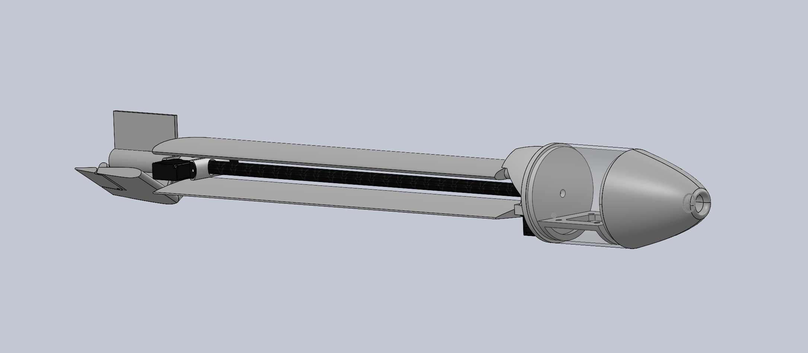
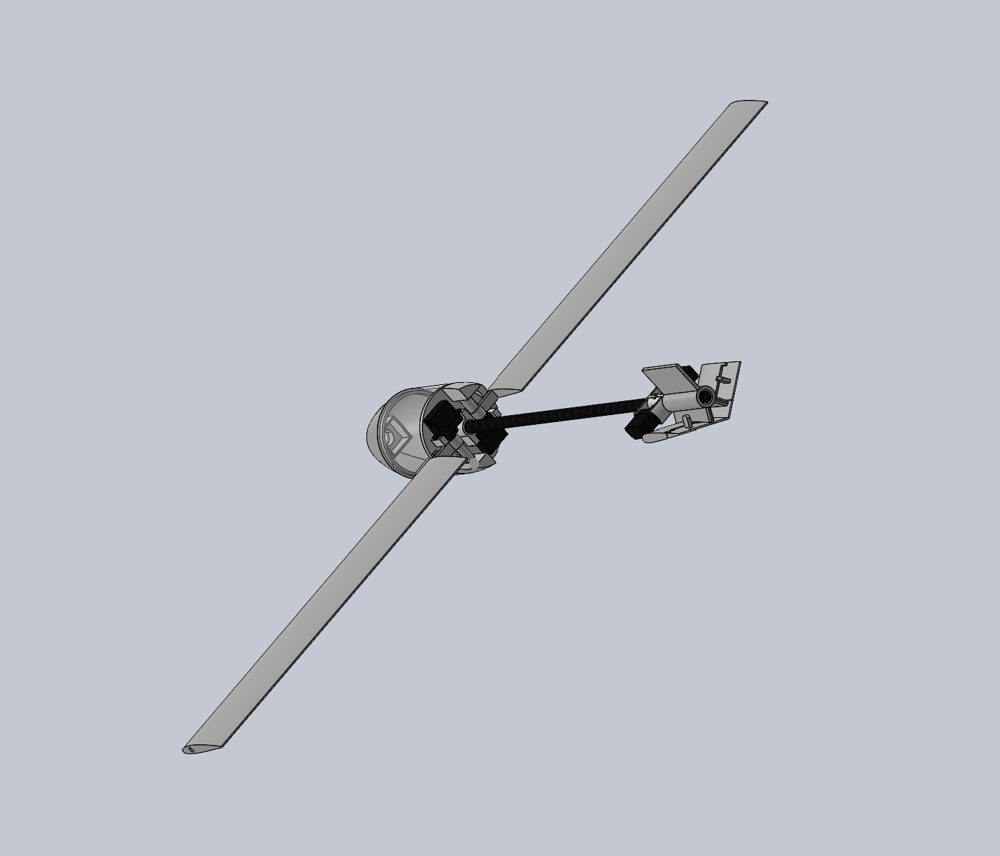
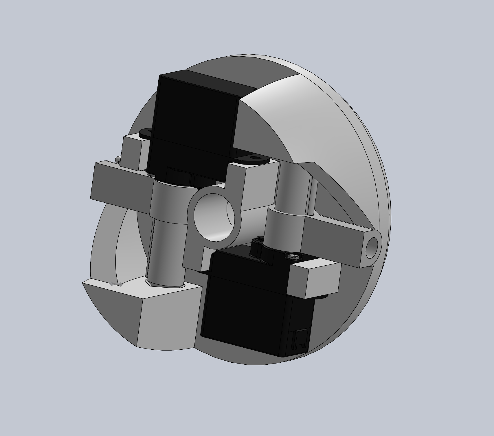
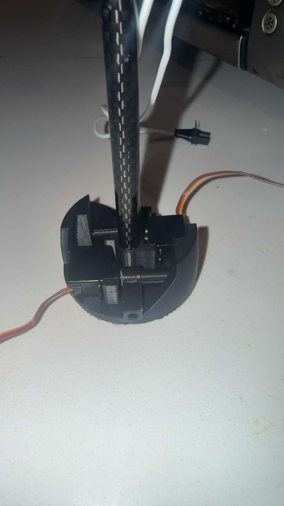
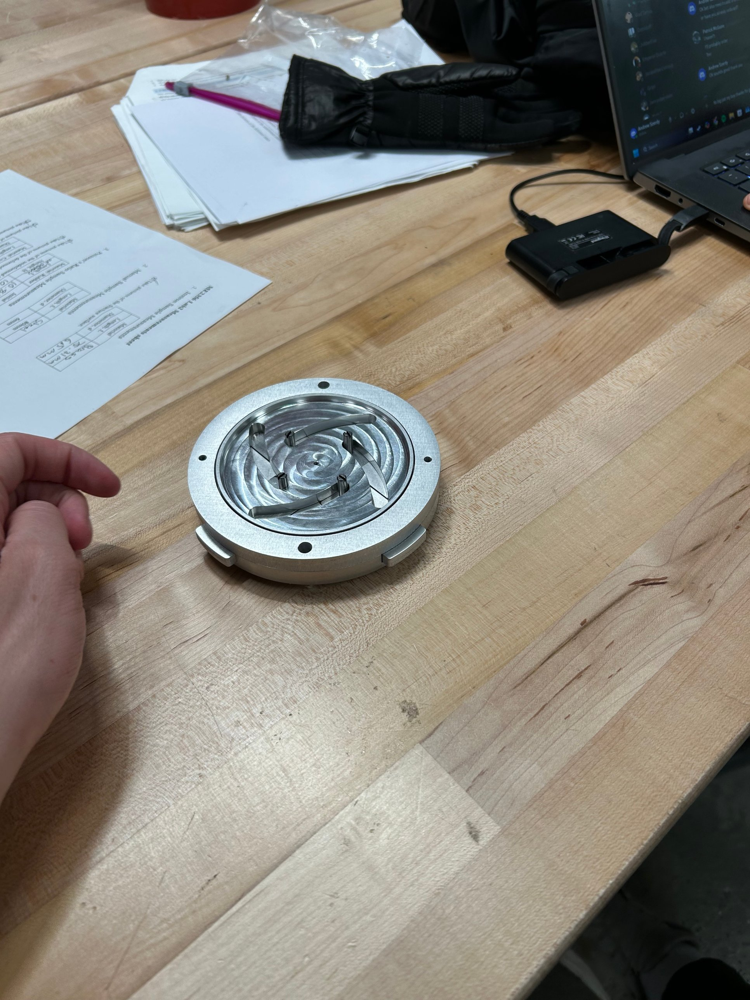
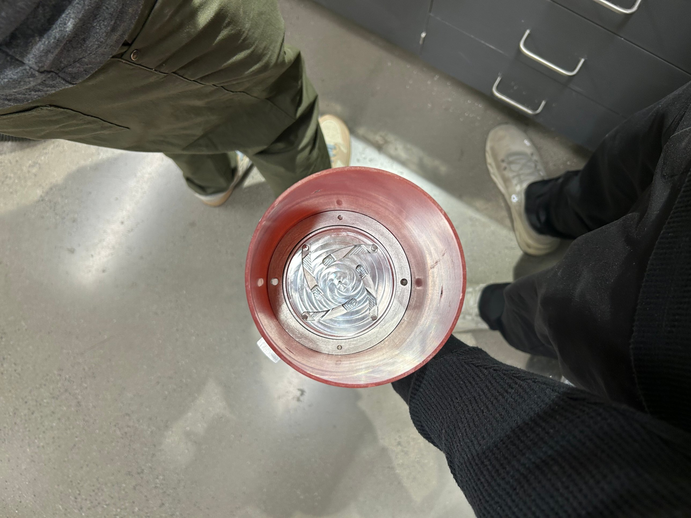
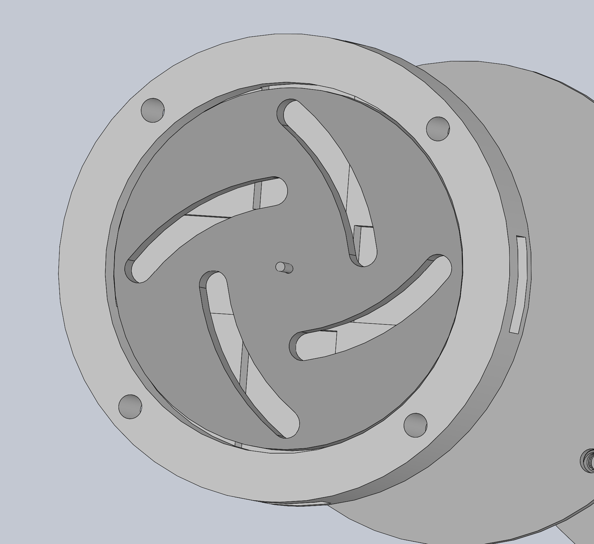
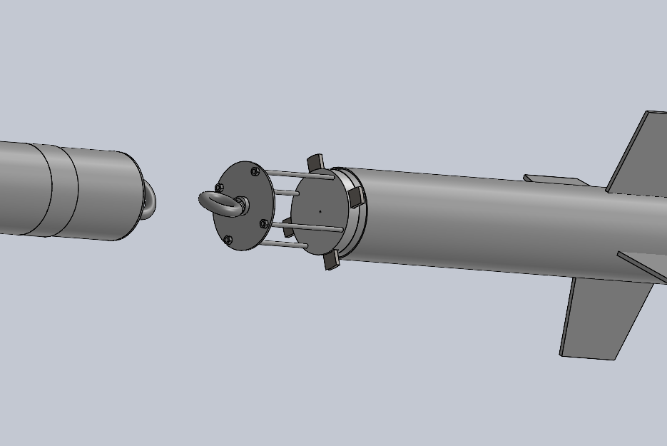
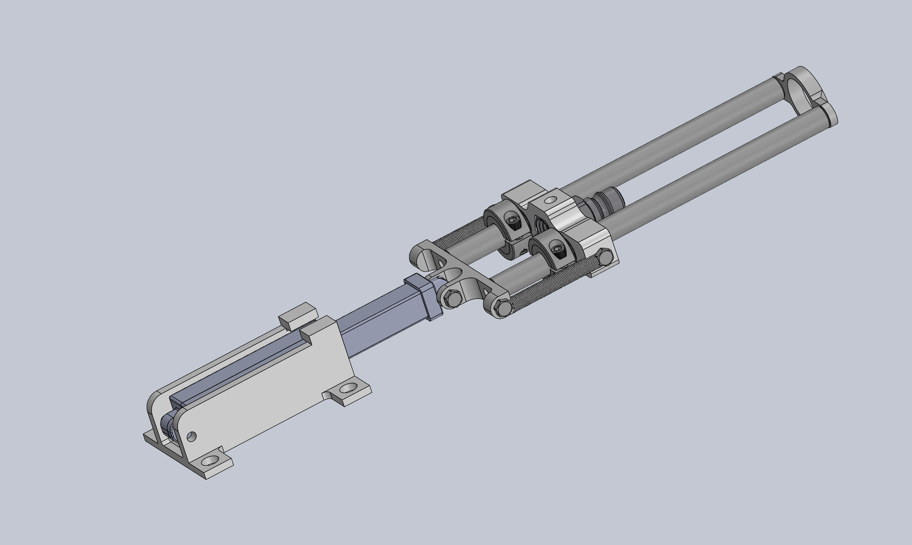

Henry Perda
B.S. Mechanical Engineering, Minor in Aerospace Engineering
Northeastern University
I design hardware that has to survive real loads, from a drone fired out of a mortar tube to machined airbrakes on a high power rocket to fluid hardware for a LOX/kerosene engine. My work spans the full loop: requirements, CAD, analysis, manufacturing, test, and redesign when things break.
Mortar-Launched UAV
A fixed-wing glider that survives a mortar launch, deploys its wings mid-air, and glides to a precise landing zone.
The airframe is packaged inside a 50 mm launch tube, takes roughly 90 m/s of launch velocity in a fraction of a second, and is designed to a $150 per-unit cost.




Key technical decisions
Airframe material: PLA to carbon fiber composite
The first-generation airframe was printed in PLA. Under real launch loads it failed by buckling, which showed that axial stiffness, not strength, was the limiting factor. I redesigned the main structure around a carbon fiber composite boom, roughly 50x stiffer than the PLA design for a small weight penalty. I compared carbon tube manufacturing methods to select a shaft construction specifically suited to resisting Euler buckling under compressive launch loads.
Wing deployment
The wings stow flat along the carbon boom to fit inside the 50 mm tube and swing out on a central pivot at apogee. Deployment is actuated by two 2 gram micro servos triggered by onboard software. Each servo is rated for 0.25 kgf·cm of stall torque, which I sized to leave enough margin to hold the wings in position against aerodynamic drag. Two more servos of the same class drive the rear control surfaces, so the airframe carries four servos total within the 0.65 kg mass budget.
Rear fuselage hinge mechanism My design
The rear fuselage hub packages two servos around a central socket for the carbon boom. As the hinge rotates, the slider and wing assembly swings outward and translates toward the servo, guided by the sloped geometry of the rear fuselage. The hinge surfaces were SLA printed for tighter dimensional accuracy. The main challenge was fitting the system inside the 50 mm diameter while holding the wings as close to the centerline as possible to maximize lifting surface area.
Aerodynamics and control
Launch power, drag coefficient, lift, and control surfaces were all sized off the range and landing accuracy targets. I selected the NACA 2412 airfoil for three reasons: its 12% thickness ratio fits a 3 mm spar inside a 2 in chord, its moderate camber (2% at 40% chord) gives good lift at low angles of attack, and its performance at low Reynolds numbers is well documented.
Analysis and testing
- CFD (ANSYS Fluent). Simulated the full airframe in both launch and glide conditions, then ran the control surfaces separately on a finer mesh to validate their authority before manufacturing.
- Structural analysis (ANSYS Mechanical). Validated the main structure against 22 g launch loads and checked the hinge mechanism for bending and vibration during flight.
- Flight testing. Completed a low altitude test regimen to validate deployment and glide behavior.
Status and next steps
The airframe has completed low altitude testing and is preparing for its first maximum power launch at 200 psi.
NUaero Airbrakes
An active airbrakes module for an L2 high power rocket. Four flaps deploy radially through the airframe to add drag during coast, letting the rocket hit a programmable target apogee instead of overshooting it.
I contributed to the design and manufacturing of the airbrakes module, owned the design and analysis of the servo housing and the electronics bay, and took part in much of the rocket's assembly.




Key technical decisions
Cam-driven plate deploys all four flaps in unison
The flaps sit on pins that ride in curved slots in a central rotating plate. Turning the plate pushes all four flaps outward at the same rate, so a single actuator controls deployment and the flaps are mechanically guaranteed to stay symmetric. That matters because uneven drag would pitch the rocket off its flight path.
Machined aluminum construction
The module housing, plate, and flaps are CNC machined from aluminum. Each flap sees roughly 20 lbf at deployment, which ruled out 3D printing. Aluminum also kept the module strong in a compact package, which was essential because the motor case left only 3 in of axial space to work with.
Integration into the airframe
The module mounts below the recovery section on a bulkhead tied in with threaded rods, as shown in the section CAD.
Electronics bay My design
The e-bay holds the PCBs and batteries that power the flight computer and the airbrakes. Working from the component spec sheets, I designed a 3D printed sled that mounts directly to the structural threaded rods and houses all onboard electronics.
NUaero Liquid Rocket Engine Quick Disconnect
A remotely actuated quick disconnect for the nitrogen fill line on the team's liquid rocket.
During loading, the fill line keeps the propellant tanks pressurized to compensate for cryogenic boiloff. Disconnecting that line by hand would put team members next to a pressurized vehicle, so the QD releases it on remote command seconds before liftoff and lets the whole team stay outside the hazard zone from pressurization through disconnect.

Requirements
The QD is a single point of failure for vehicle fill and disconnect: if the hose doesn't release, the launch doesn't happen. The requirements are built around reliability.
| ID | Requirement | Verification |
|---|---|---|
| REQ-001 | Disconnect the N2 fill line on remote command after pressurization, with no personnel at the vehicle | Test |
| REQ-002 | Complete 100 connect/disconnect cycles with zero failures | Test |
| REQ-003 | Show no visible damage or plastic deformation after 100 cycles | Inspection |
How it works
The design is built around off-the-shelf Parker pneumatic couplings. Instead of designing a custom seal, the mechanism only has to do one thing: pull back the connector's release sleeve.
- The static base is secured to the ground with the linear actuator set to its centered position.
- The fill hose attaches to the slider, the extension springs are stretched, and the ground and air sides are mated.
- On remote command, the actuator extends 1/2 in and drives the sleeve pusher, which retracts the connector sleeve and releases the coupling.
- The springs pull the groundside sled back 1 in, where it stops against polyurethane-padded shaft collars.
- The actuator retracts 1 in, the airside valve clears, and the QD falls away from the vehicle.
Key technical decisions
Extension springs over compression springs
Separation can't rely on line pressure, because the QD also has to release when the hose is unpressurized. Springs guarantee the groundside pulls away every time, and extension springs give a more predictable force across the range of positions the sled travels through.
Linear motion shafts instead of a dual sled
Moving to guided shafts lets the groundside connector travel with the entire actuated segment before release, then slide back cleanly afterward, using one moving assembly instead of two.
Spreading the shafts apart My call
The first layout didn't leave enough clearance between the flexible hose and the shaft collars. I widened the shaft spacing so the hose can move freely through the full release stroke.
Polyurethane impact pads
Analysis showed the sled striking the shaft collars exceeded the allowable axial load. Adding 1/4 in Shore 40A polyurethane pads slows the impact enough to bring it back under that limit.
Test plan and status
- 100-cycle unpressurized test (REQ-002, REQ-003). Qualify release reliability and confirm zero wear.
- Pressurized cycle test (REQ-001). Confirm release under line pressure.
In detailed design with CAD near complete. Next steps are prototype build, the 100-cycle qualification test, and pressurized release testing.
Outreach
Roxbury Robotics, Volunteer. An afterschool program introducing elementary students to robotics, giving kids with fewer resources access to engineering.
Skills
- SolidWorks
- ANSYS Fluent (CFD)
- ANSYS Mechanical (FEA)
- Composite layup
- Machining
- SLA and FDM 3D printing
- Python
- Flight controllers